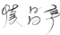

소비자중심경영(CCM) 운영
교보생명 모든 임직원들은 소비자중심경영을 성실히 준수할 것입니다.
저는 2000년 '변화와 혁신'을 시작하면서 CS, 즉 ‘고객기대만족’이야말로 회사경영의 가장 중요한 목표가 되어야 한다고 지속적으로 강조해 왔습니다.
실제로 여러분들이 지금까지 힘껏 도와주신 덕분에 우리 CS역량과 CS문화는 크게 향상되었고, 객관적으로도 ‘고객만족 경영대상 5년 연속 수상’을 비롯한 여러 성과를 통하여 교보생명 고객만족경영의 우수성을 널리 인정받아 왔습니다.
오늘 우리는 고객의 이익을 먼저 고려하고, 정당한 고객의 불만을 지금보다 더욱 적극적이고 체계적으로 관리하기 위해 CCM(소비자중심경영)을 정식으로 도입 운영하고자 합니다.
CCM은 사전에 고객불만을 예방하고, 고객이 불만을 제기했을 때에도 이를 효율적으로 해소하는 명확한 기준과 절차를 우리 임직원 및 컨설턴트분들에게 제시해 줍니다. 우리는 금번에 도입하는 CCM의 운영을 통해 고객만족경영을 위한 업무프로세스와 인프라 수준을 한 단계 높이고, 선량한 고객들이 미래의 역경에서 좌절하지 않도록 도우려는 우리의 노력을 한층 더 강화하는 계기로 삼을 것입니다.
교보생명 대표이사 신창재